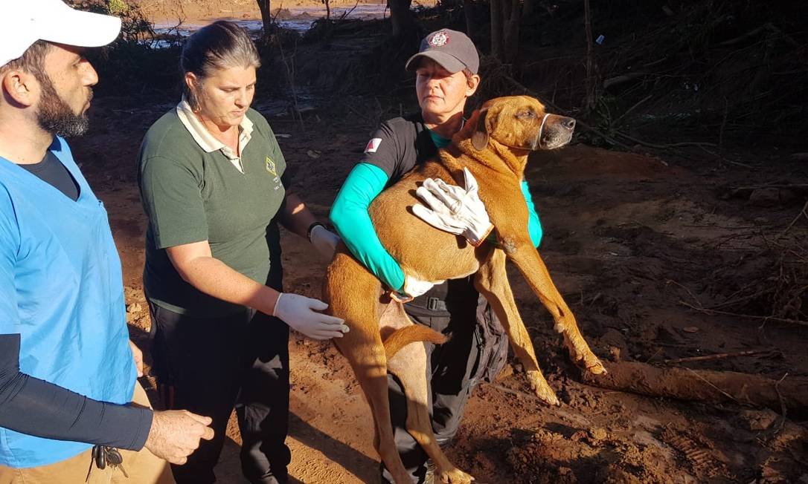
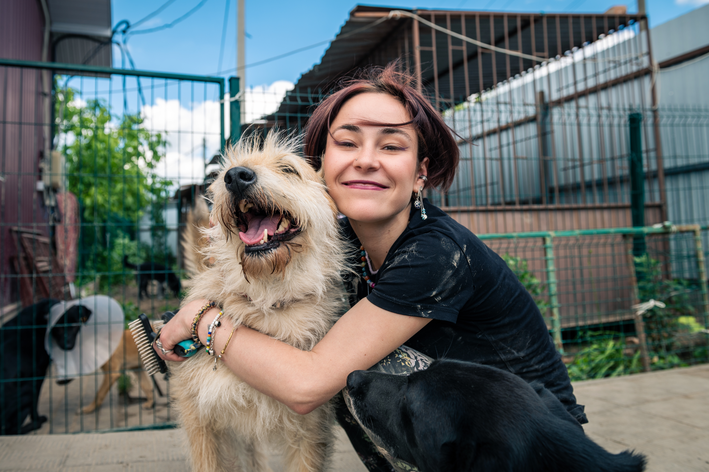
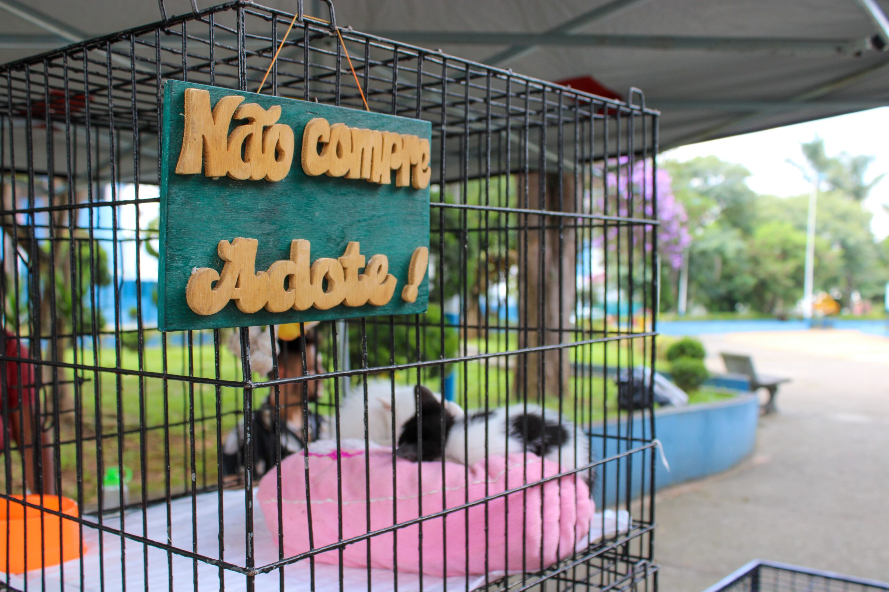
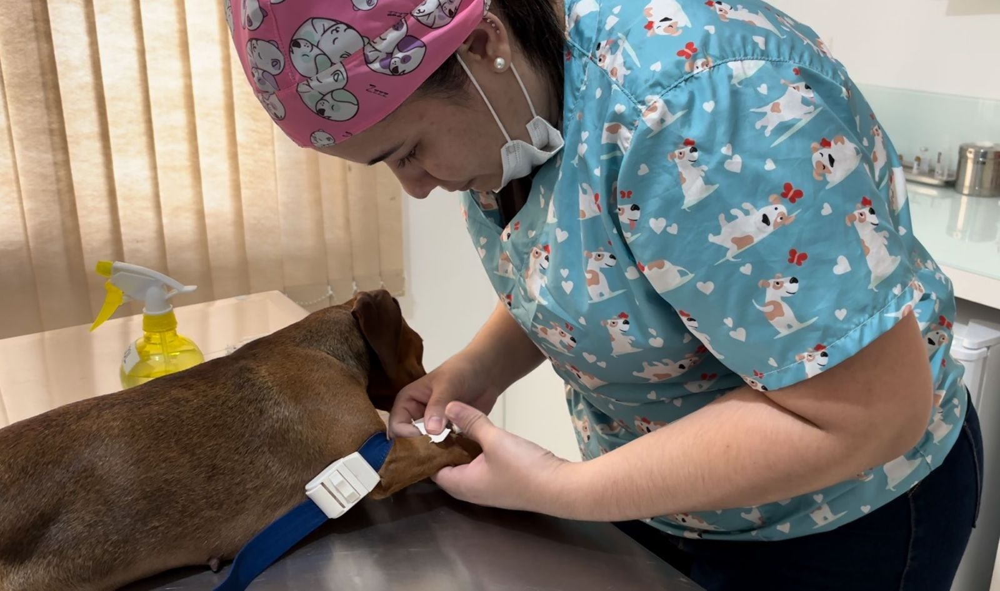
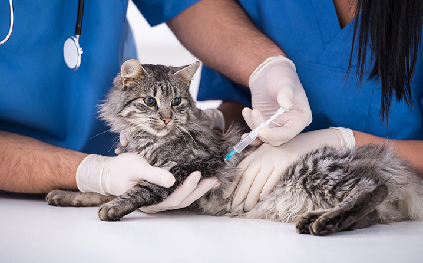
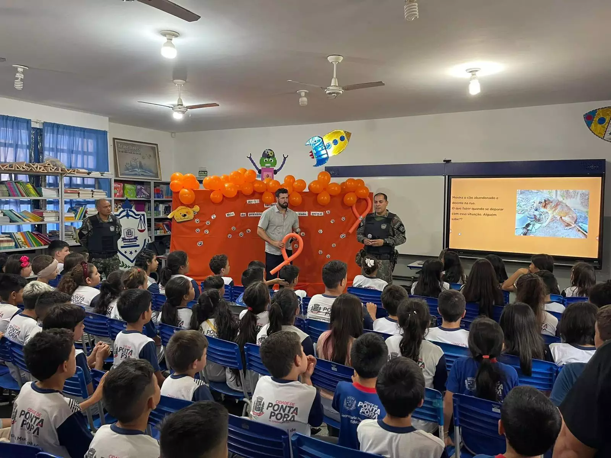
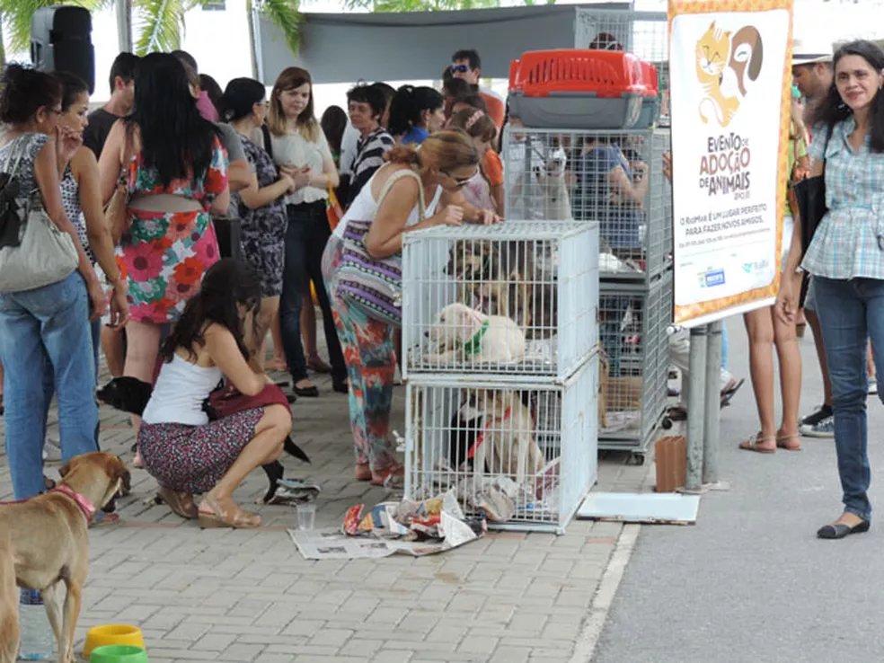
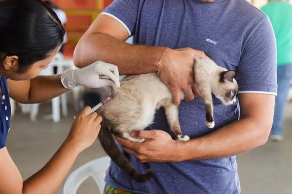
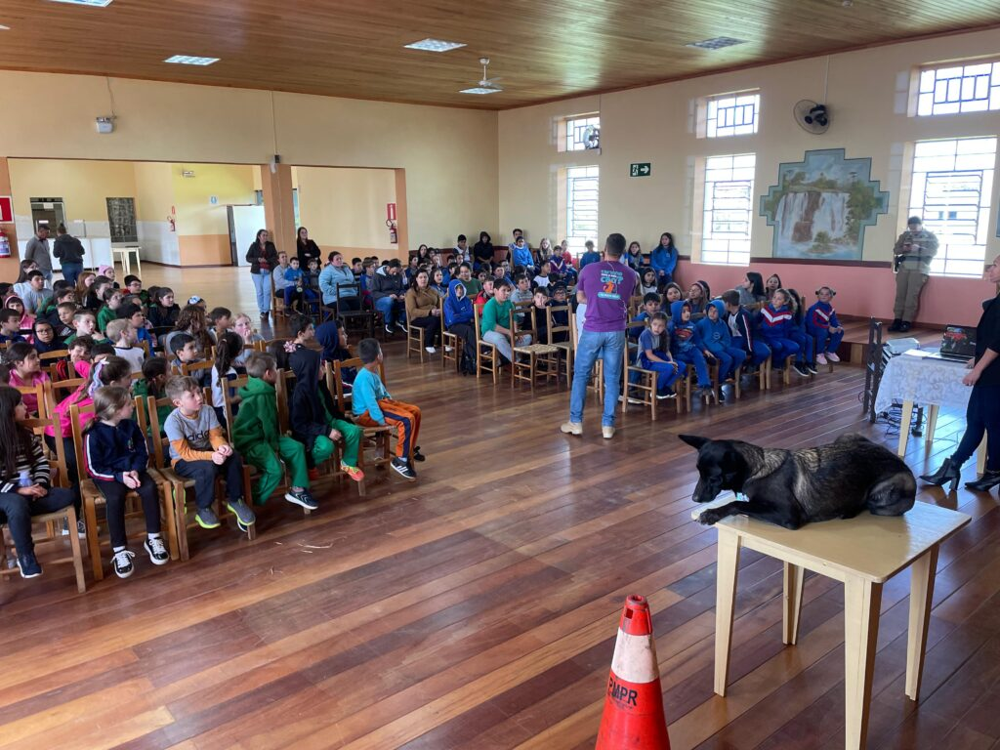

Resgate e Acolhimento

Nossa equipe e nossos voluntários resgatam animais em situação de abandono ou maus-tratos, oferecendo atendimento de emergência, alimentação e um abrigo seguro.

Ser voluntário ou fazer uma doação é um gesto simples que muda a vida de quem recebe e também a de quem oferece. Para os animais, a sua ajuda significa comida, tratamento veterinário, abrigo seguro e a chance de encontrar uma família que vai amá-los para sempre.
Para você, fazer o bem traz sentimentos de propósito, gratidão e pertencimento. Quem se dedica a uma causa costuma se sentir mais feliz, menos estressado e mais conectado com as pessoas ao redor. Dedicar um pouco do seu tempo ou contribuir com qualquer valor faz bem para o coração, e o carinho de um animal resgatado é a melhor recompensa.
Conheça abaixo os nossos projetos e escolha o que mais toca você. Juntos, somos as patas que transformam!

Nossa equipe e nossos voluntários resgatam animais em situação de abandono ou maus-tratos, oferecendo atendimento de emergência, alimentação e um abrigo seguro.

Realizamos feiras e mutirões de adoção, com acompanhamento das famílias, para garantir que cada animal encontre um lar cheio de amor e responsabilidade.

Oferecemos castração gratuita ou a preço social para animais de famílias de baixa renda e de rua, ajudando a reduzir o abandono e a superpopulação de animais.

Promovemos dias de vacinação e vermifugação gratuitas para proteger a saúde dos animais e prevenir doenças, como a raiva, nas comunidades.

Estamos construindo um espaço para tratar animais feridos e doentes, com baias, medicamentos e cuidados veterinários até que estejam prontos para a adoção.

Levamos palestras e atividades para escolas e comunidades sobre posse responsável, maus-tratos e respeito aos animais, formando uma nova geração de protetores.
Veja alguns momentos dos nossos projetos em fotos e vídeos.



